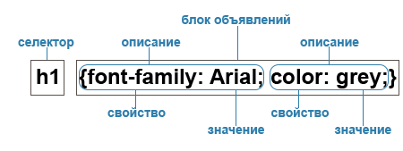

CSS (Cascading Style Sheets) — язык таблиц стилей, который позволяет прикреплять стиль (например, шрифты и цвет) к структурированным документам (например, документам HTML и приложениям XML).

Виды таблиц стилей:
-
Внешняя таблица стилей представляет собой текстовый файл с расширением .css, в котором находится набор CSS-стилей элементов. Файл создаётся в редакторе кода, так же как и HTML-страница.
Внутри файла могут содержатся только стили, без HTML-разметки. Внешняя таблица стилей подключается к веб-странице с помощью элемента < link > , расположенного внутри раздела
< head > </head >. Такие стили работают для всех страниц сайта.
-
Внутренние стили встраиваются в раздел <head> </head > HTML-документа и определяются внутри элемента
<style > </style >. Внутренние стили имеют приоритет над внешними, но уступают встроенным стилям (заданным через атрибут style).
- Когда мы пишем встроенные стили, мы пишем CSS-код в HTML-файл, непосредственно внутри элемента с помощью атрибута style